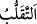
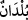

hakkında indirilmiştir. Yani, müstehzîlerden idi. Kur’ân’ı inkâr ve tekzîb husûsunda
bâtıl olduğuna şiddetlice husûmet beslerdi.
Mânâ şöyledir: Allah’ın âyetleri hakkında “bunlar sihirdir, şiirdir, öncekilerin
uydurmasıdır!” vb. iddiâlarla, ayrıca “(O kâfirler,) hakkı ortadan kaldırmak için
bâtılı kullanarak mücâdele ettiler!” (el-Kehf 18/56) âyetinde dikkat çekildiği üzere
bu âyetleri çürütüp değersizleştirerek yok etmek gâyesiyle birtakım asılsız gerekçeler
kullanmak suretiyle ileri geri konuşarak hiç kimse tartışmaya girmez, ancak bu âyetleri
inkâr edenler tartışmaya girebilir ve bunlara saldırabilir! Allah’ın âyetlerine îman
edenler ise, saldırıp ileri geri konuşmak bir tarafa bu hususta gönüllerine en küçük bir
şüphe kırıntısı bile gelmez. Bununla birlikte âyetlerdeki anlaşılması zor hususları
halletmek, âyetlerin ihtivâ ettiği hakîkatleri ortaya çıkarmak, sapık ve yanlış
yoldakilerin şüphelerini gidermek gâyesine mâtuf olarak girişilen tartışmalara gelince,
bunlar en büyük tâatlerden olup Allah yolunda cihâd etmek gibidir. Peygamberimiz
(s.a.)’in, cidâl lâfzını, tartışmanın nev’ini belirleyip tartışmadan tartışmaya fark
bulunduğunu ifâde edecek şekilde nekre ile: “Kur’an hakkında yapılan bir
cidâl/tartışma küfürdür!”[161] buyurmasının sebebi de budur.
Şeyhim ve senedim hazretlerinin, bu âyetin zeylinde Fakir’e âid risâlelerden birinde
şöyle bir işârî açıklaması vardır: “Şerîatı inkâr edenler şu resmî/zâhirî Kur’an’ın
âyetleri hakkında mücâdele ediyorlar. Bunlar resmî/zâhirî âyetler hakkında
tartıştıklarından, tartışmaları da resmî/zâhirî oluyor. Böylece, gerçeğin inkârcısı
olmanın yanı sıra zâhirin inkârcısı da olmuş oluyorlar. Gerçeği inkâr edenler ise gerçek
Kur’an’ın âyetleri hakkında tartışıyorlar ve gerçek âyetler hakkında tartıştıklarından,
tartışmaları da gerçek olmuş oluyor. Ancak bunlar zâhirin inkârcısı değil, sadece
gerçeğin inkârcısı oluyorlar. Bu durumda, ey kurbanlık Hz. İsmâil’in adını taşıyan
yavrum Hakkı, sana düşen, inkârı ve mutlak anlamda her tür tartışmayı terkederek
ismine lâyık olmandır. Ta ki hem Allah Teâlâ hem de müminler katında gerçek bir
mümin ve samîmî bir müslüman olabilesin! Doğru ve tutulacak yol bu olup herkesin bu
yola dâvet ve irşâd edilmesi gerekmektedir. Hepimize düşen, bunu kabul edip irşâdın
gereğini yerine getirmektir; tüm kulların yerine getirmesi gereken farz da budur.”
“İnkârcıların memlekette gezip dolaşması seni aldatmasın.”
“__WORD__” uyanık bir halde iken düşülen gaflettir. “__WORD__ döndürmek anlamındadır. el-
Müfredât’ta belirtildiğine göre ise “takallüb” gidip gelmek; “bilâd” ise şehirler
demektir. Râgıb der ki: “«Beled», sâkinlerinin bir araya gelerek orada ikâmet
etmesinden etkilenen sınırlı bir yerdir. Çoğulu
ve
olarak gelir. Mânâ şöyledir:
Bahsi geçen kişiler hakkında “Bunlar kâfir olacak!” hükmünün verildiğini bildiğine
göre, onlara mühlet verilmesi, dünyadaki ikballeri, Suriye-Yemen arasında kârlı alış-
verişler için gidip gelmeleri -ki söz konusu bölgelere yazın ve kışın seferler yapmakta
idiler- seni sakın üzmesin!
Nitekim onlara tanınan bu imkân, “onların mübarek gönülleri için fırsat ve mühlet